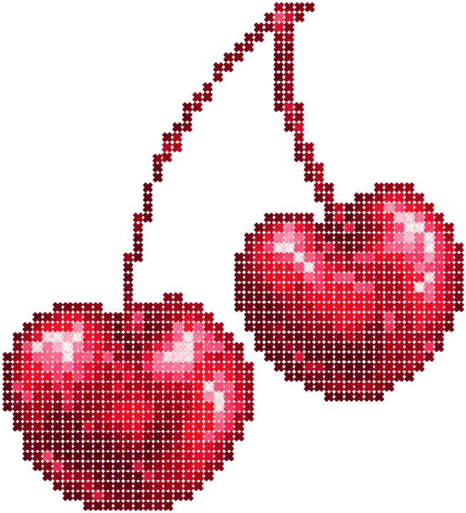
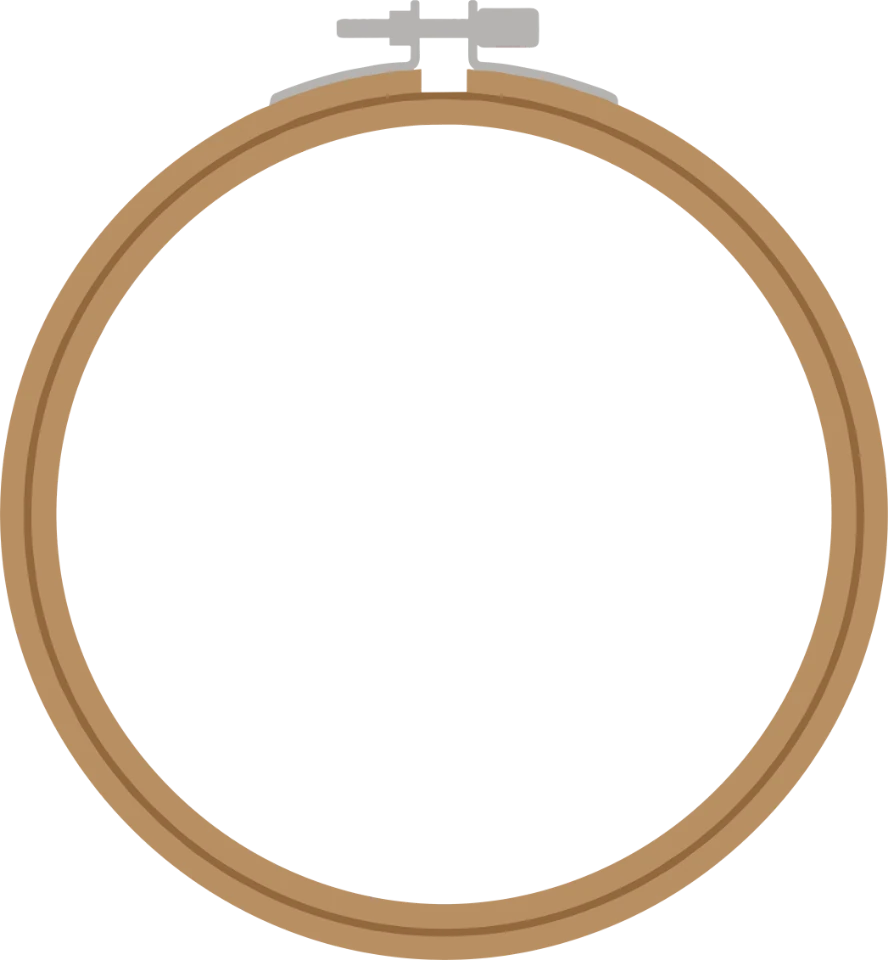

Happy gut
Prebiotic fiber feeds the good bacteria in your gut, the ones that keep digestion running smoothly.

Cherry Vanilla
[ 01 ] Why fiber
Your body asks for 30 grams of fiber a day. Most of us get about half. So we put five grams into every can, and the drink you were reaching for anyway finally gives something back.
of prebiotic fiber in every can. About as much as two slices of wholegrain bread.
grams of fiber: the recommended daily intake for adults.1
No artificial sweeteners, colors or preservatives.
Prebiotic fiber feeds the good bacteria in your gut, the ones that keep digestion running smoothly.
Fiber slows digestion down, so you stay satisfied between meals instead of hunting for snacks.
It slows how fast sugar reaches your blood. Fewer spikes, fewer afternoon crashes.
People who eat the most fiber have a 15–30% lower risk of heart disease, stroke, type 2 diabetes and colorectal cancer.2
[ 02 ] Your day
Inside you lives a quiet garden: trillions of tiny organisms that keep you well. Fiber is what they eat. Tell us about your day, and see how well it was fed.
0/ 30 g
Feed your garden →1 German Nutrition Society (DGE): 30 g of fiber per day for adults. 2 Reynolds et al., Carbohydrate quality and human health, The Lancet, 2019: highest vs. lowest fiber intakes across 185 studies and 58 trials. Food values are approximate. Fibra Pop is a tasty way to add fiber, not a medicine. Enjoy it as part of a varied, balanced diet.
[ 03 ] The flavors
[ 04 ] Play
Move your cursor (or drag your finger) over the dots in the hoop to sew the pattern. Finish it and you get a little something.

Beautifully done.
10% off your first box
[ 05 ] Shop
Six cans, mixed however you like, for €15. Tap a can in the crate to take it out.